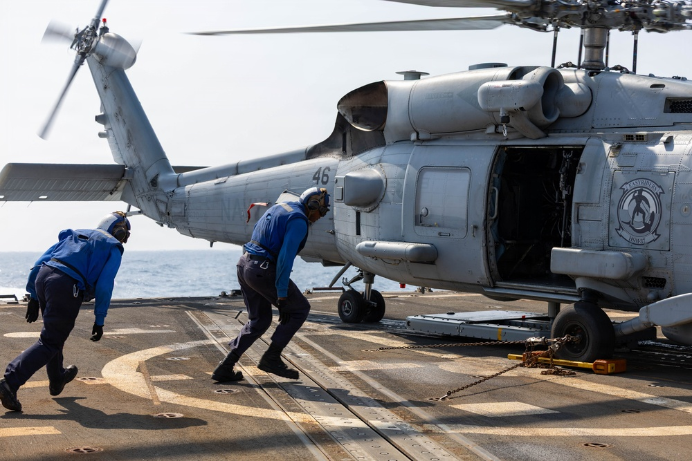

NAVCENT Public Affairs · DVIDS 10069500 · Public domain · Sailors prepare to remove chocks and chains from an MH-60R Sea Hawk of HSM-37 during flight operations aboard USS Wayne E. Meyer (DDG 108), U.S. 5th Fleet, Oct. 29, 2026. Posted Nov. 4, 2026.
DVIDS
Sailors aboard Wayne E. Meyer launched a Sea Hawk in the 5th Fleet on Oct. 29
A Navy still posted Wednesday shows sailors clearing an MH-60R Sea Hawk of Helicopter Maritime Strike Squadron 37 on the destroyer USS Wayne E. Meyer. The photo was taken Oct. 29 in the U.S. 5th Fleet area of responsibility. NAVCENT public affairs released it as a flight-operations image, VIRIN 261029-N-NO146-3025. The frame is the ship and the helicopter, not a press photo.
DVIDS · Read source →